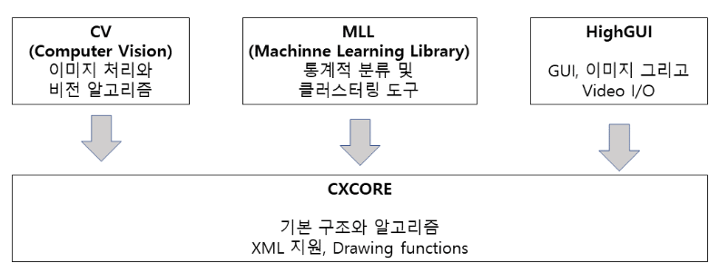

||| openCV 기본 구조 |||

CV (Computer Vision) :
기본 구성 요소에서는 기본 이미지 처리와 고급 컴퓨터 비전 알고리즘을 포함
HighGUI :
OpenCV에 기본으로 포함되어 있는 GUI.
여기에는 비디오와 이미지 저장 그리고 이를 로드하기 위한 I/O 루틴을 포함
CXCORE :
이곳에는 기본 데이터 구조와 여러 content가 구성